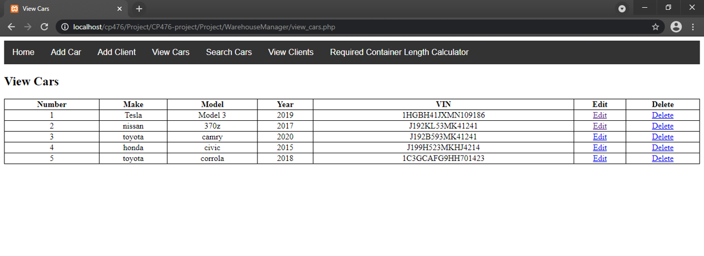
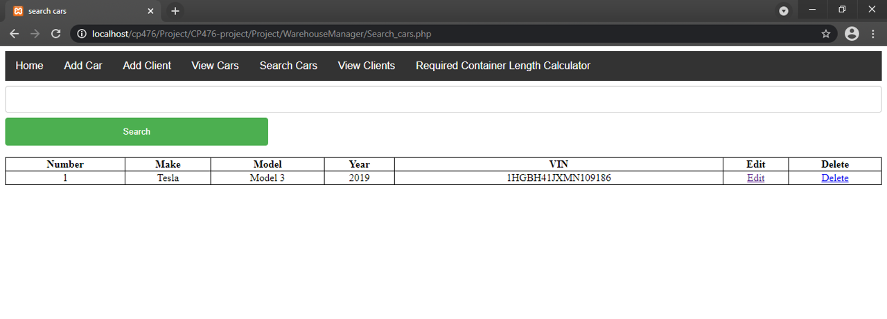
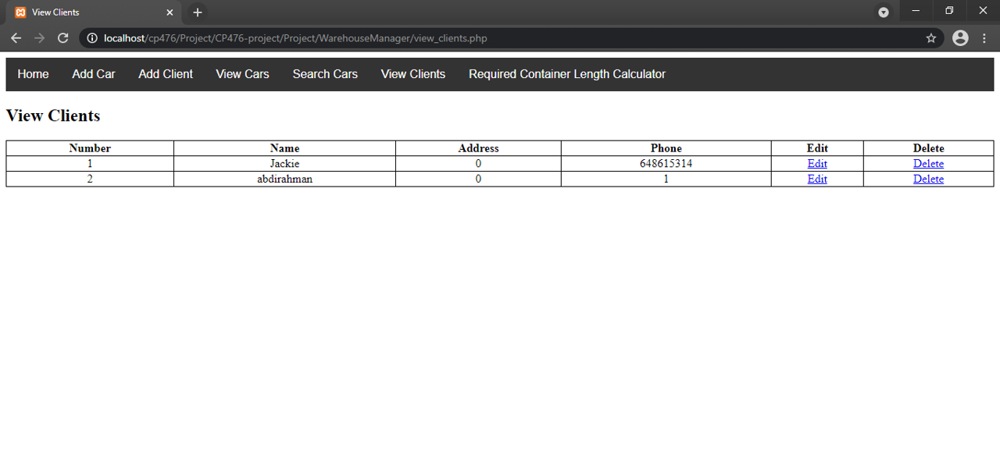

CP476 Group Project: Warehouse management - Using the Application
1. Dependancies
- Apache webserver
- MySQL
2. Running
- Can be deployed to run using LAMP (for linux) or XAMPP (for windows)
3. Importing database to MySQL.
- Using PHPMyAdmin create database named ‘warehousedb’
- Import warehousedb.sql from root project directory ./WarehouseManager/warehousedb.sql into the newly created database.
4. Adding users to database
- In PHPMyAdmin select the users table and insert a user with username and password, we will use this for login.
5. Logging in
- go to WarehouseManager/Login_Page.html and enter credentials that were inserted in section 4.
 Login Page
Login Page
 Logged In
Logged In
6. Adding cars to the database
- In the navbar go to ‘Add Car’ and enter car information then press ‘Save car Info’
 Add Car
Add Car
7. Editing and removing cars to the database
- In the navbar go to ‘View Cars’ or ‘Search Cars’. If you go to search cars enter criteria to search for, it could be model,make,year,vin.
- Find entry you want to edit/delete and select it, if edit is pressed enter new information and click the button.
View Cars page
Tesla Search
 Car Edited
Car Edited
8. Adding Client to the database
- In the navbar go to ‘Add Client’ and enter Client information then press ‘Save Client Info’.
- If succesfull a message will show confirming the addition in the ‘Home’ page.
 Add Client
Add Client
 Add Client Successful
Add Client Successful
9. Editing and removing cars to the database
- In the navbar go to ‘View Clients’.
- Find entry you want to edit/delete and select it, if edit is pressed enter new information and click the button.
View Clients Page
10. Using Minimum Container Length Calculator
- In the navbar go to ‘Required Container Length Calculator’.
- Enter the lengths of the cars you want to ship in container (in meters).
- The result will show if it can fit in 20FT or 40FT with amount of space left (padding in meters) to use as extra space for shipping more goods.
Container Length Requirement And Padding